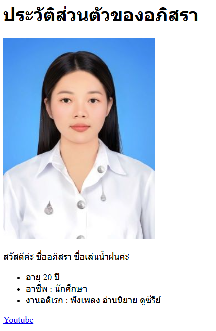

Ex.5 : HTML : beginner : สร้างหน้าเว็บประวัติส่วนตัวอย่างง่าย
คุณได้รับมอบหมายให้สร้างหน้าเว็บ HTML
อย่างง่ายเพื่อแสดงข้อมูลประวัติส่วนตัวของคุณเอง โดยใช้แท็ก HTML
พื้นฐานต่างๆ เพื่อจัดโครงสร้างเนื้อหาให้ดูเป็นระเบียบและอ่านง่าย
นี่เป็นโอกาสที่ดีในการฝึกใช้แท็กพื้นฐานที่คุณได้เรียนรู้มา
สิ่งที่โจทย์ต้องการ:
-
สร้างหัวข้อหลักของหน้าเว็บ (เช่น 'ประวัติส่วนตัวของ [ชื่อของคุณ]')
โดยใช้แท็ก H1
-
แสดงรูปภาพของคุณ (หรือรูปภาพแทนตัว) โดยใช้แท็ก IMG พร้อมระบุ src และ
alt
- แนะนำตัวเองสั้นๆ ในย่อหน้า โดยใช้แท็ก P
-
สร้างรายการข้อมูลส่วนตัว (เช่น อายุ, อาชีพ, งานอดิเรก) โดยใช้แท็ก UL
และ LI
-
เพิ่มลิงก์ไปยังเว็บไซต์โปรด หรือ Social Media ของคุณ โดยใช้แท็ก A

https://github.com/6740011062/ApisraWebPortfolio.git